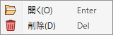

Browseモード
フォルダを開き、そのフォルダ内の複数のファイルに対して分析や一括操作などを行うためのウィンドウです。
説明
要素をクリックすると説明セクションに飛びます。
要素をクリックすると説明が表示されます。
ターミナルメニュー:
ファイルリスト
- 開いているフォルダの内容を表示するエリアです。
- ファイルの追加や削除、名前の変更はリアルタイムで反映されます。
リストの操作
- リストのヘッダ(「種類」などが書いてある部分)をクリックすると、その項目を基準としてソートします。
-
リスト項目を右クリックするとコンテキストメニューを開きます。

-
開く: このファイルを開きます。
- BmsMaker3に対応している形式の場合は、対応するモードのウィンドウを開きます(「種類」欄のアイコンで判別できます)。
- BmsMaker3が対応していない形式の場合、Windows標準の「開く」動作になります。
-
削除: この項目を含む、選択中の全ての項目を削除します。
-
ファイルは直接削除され、ゴミ箱へ送られません。
元に戻すことはできないのでよく注意して行なってください。
-
ファイルは直接削除され、ゴミ箱へ送られません。
-
開く: このファイルを開きます。
操作パネル
- フォルダ内の各ファイルに対する分析や一括操作を行うためのパネルです。
- 詳細はそれぞれの説明ページを参照してください。